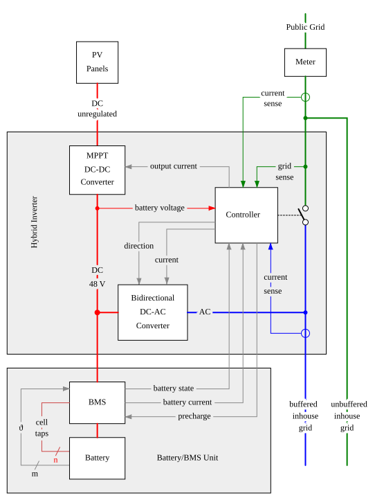
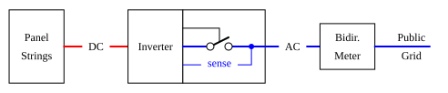
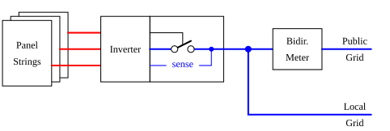
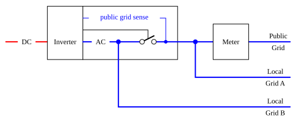
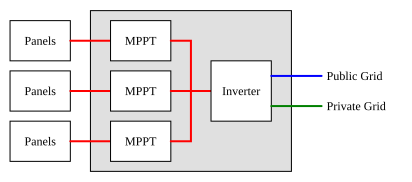

To understand PV architectures, we will first have a look into the structure of a hybrid inverter, an all-in-one system, sort of:

At the left top, we have a string of PV panels, which produce an unregulated DC voltage of several hundred volts. The current is consumed by the MPP tracker, which is a DC-DC converter that optimises power draw from the panel string and produces a stabilized battery system voltage on the battery bus, approximately 48V DC in this case. Current from the MPPT converter flows through the battery management system (BMS) into the battery cells, which are connected in parallel and/or in series.
The bidirectional DC-AC converter is connected to this DC battery bus. Its direction input determines whether the converter is used as a generator (DC→AC) or battery charger (AC→DC). In generator mode, the DC-AC converter pushes energy into the buffered inhouse grid. If the circuit breaker is closed, the converter can compensate the inhouse load, and even push engergy into the public grid.
On the top right side is the public 240 V AC Grid, which is separated from the buffered inhouse grid (bottom right) by a circuit breaker. During normal operation, this switch is closed, so that public and private grids are electrically synchronized and connected. In case of public grid outages, the circuit breaker is opened immediately to prevent the DC-AC converter from pushing engergy into the public grid.
If the DC-AC converter is the heart, the controller is the brain of the system. The controller senses currents that flow into or out of the public and inhouse grids. By controlling the bidirectional DC-AC converter, the controller can compensate inhouse loads, so that no current is drawn from the public grid and event over-compensate, in which case the surplus energy is pushed into the public grid.
Critical electric infrastructure such as lighing, computers, central heading and refrigerators should be connected to the buffered inhouse grid. In case of public grid outages, they are supplied from the engery stored in the batteries.
Uncritical infrastructure, such as washing machines and dishwashers, and high-current appliances such as water flow heaters should be connected to the unbuffered inhouse grid to prevent them to deplete the batteries within minutes.
Some notes on the battery and battery management unit at the bottom: The BMS measures current flow in and out of the batteries. If the charge or discharge current limit is exceeded, an internal circuit breaker (not shown in the diagram) is tripped to disconnect the 48 V DC bus from the battery cells.
The cell tap lines at the left side connect to the positive end of each battery. This allows the BMS to monitor the voltage of each battery cell and control the cell balancing circuits in order to prevent cells from being charged unevenly.
Additionally, thermal sensors (ϑ) allow the BMS to monitor the cell temperatures.
An analog battery current output allows the controller to measure the current into or out of the battery, and thereby control charging and discharging the batteriess within their limits.
The following figure shows a simple PV system:

The PV panels on the right side feed DC current into the inverter. The inverter converts DC into AC for the grid. Coupled with the inverter is a circuit breaker. The inverter senses the grid side and trips if the public grid goes offline.
The following figure shows how the household grid is connected to consume some of the electricity generated by the PV panels. It also shows that the inverter has multiple PV string inputs.

Multiple inputs help to optimize the system in cases where the panels are mounted on different roofs. The PV panels in each string should be of the same type and oriented in the same direction, otherwise they will not reach their full potential.
Both configurations disconnect the PV for security and regulatory reasons if the public grid goes down, even if the PV panels could deliver energy into the household. They are called "grid-tied".
There are off-grid capable inverters that are able to provide power to the household (the local grid B) even if the public grid is disconnected:

Like the grid-tied inverters, the inverter trips the circuit breaker if the public grid goes down. This also disconnects the local grid A, but the inverter continues to drive the local grid B with vital appliances like lighing, refrigerators, computers, network infrastructure, and the central heating oven. When the public grid becomes available again, the inverter synchronizes the internal with the external grid (which may take a minute or two), and when they are in phase and the voltages match, the breaker is closed and local and public grids are connected again.
A maximum power point tracker (MPPT) is a DC-DC converter that converts the varying panel string output voltage to a constant DC voltage and maximizes the power drawn from the PV panels:
A detailed explanation can be found here. The MPPT is often integrated into the inverter. Many inverters have multiple inputs, each equipped with its own MPPT so that you can group panels with similar characteristics (panel type, orientation, shading situation) together.

A hybrid inverter adds a battery with charging module to the system:
{kind=link}